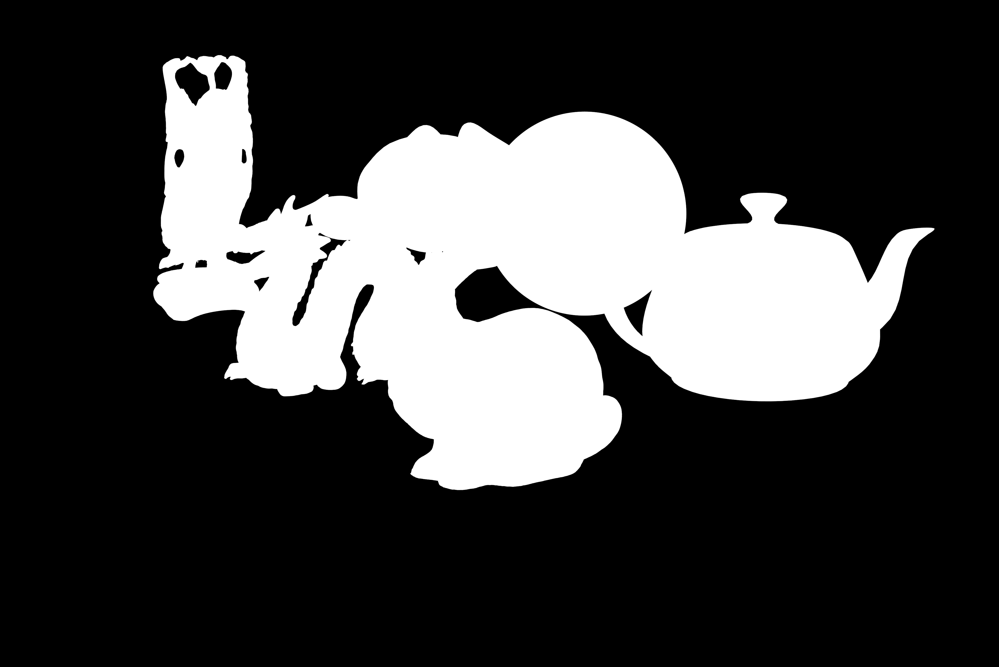
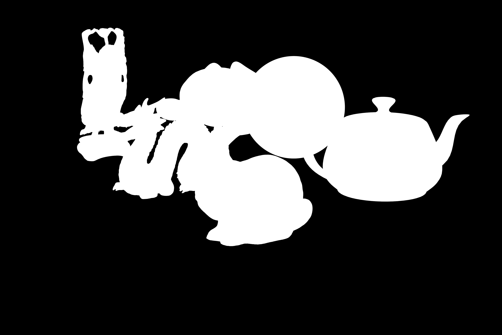

CS 445 Project #4
Xiaotian Le (xle2) & Sihao Chen (schen149)
Recovering HDR Radiance Map
Data Collection
Aperture: f/16
Shutter speed: 1/13 s
ISO: 100" /> Lens: FE 90mm F2.8 Macro G OSS
Aperture: f/16
Shutter speed: 1/3 s
ISO: 100" />
Aperture: f/16
Shutter speed: 1.3 s
ISO: 100" />

Naive Merging
Here is the estimated log irradiance for each exposure. Shadows in dark images and highlights in bright images are very noisy with no detail. The irradiances don't look the same, as the method directly scales the exposures, assuming that g(Z) = ln(Z), which is not true here.

Below is the merged, HDR log radiance image.
LDR Merging Without Under- and Over-exposure
The estimated log irradiances are obviously the same as the naive method. Below is the merged, HDR log radiance image from a weighted average.
LDR Merging with Response Function Estimation
Here is the estimated log irradiance for each exposure. With a correct response function, the irradiances now look the same.

Here are plots of the estimated response functions for R,G,B channels. We use lambda = 4.0 so that the image looks smooth.
Below is the merged, HDR log radiance image based on the estimated response function.
Comparison & Analysis
The shadows and highlights of the naive result are also very noisy due to the noisy scaled source images.
Since under- and over-exposed pixels are given little weight,
the weighted method significantly reduces such noise,
producing a clean image.
However, there are still artifacts in shadows and highlights,
such as the view outside the windows,
due to the incorrect response function.
The response method correctly estimate the function,
so that all shadow and highlight areas are natural.
Panoramic Transformations
Equirectangular transformation
For Equirectangular transformation, we first estimates the normal vector of the mirror ball at each pixel location. By assuming that the mirror is a perfect sphere centered at the center of the image, and the image lies on the XY-plane, we get the Z component of the normal vector by solving X^2 + Y^2 + Z^2 = R^2. From the normal vectors and a fixed viewing direction, we can calculate the reflection vector on each pixel of the mirrorball image. Then we convert reflection vectors obtained to spherical coordinates. Becuase the X axis of the equirectangular map corresponds to the latitude, and Y axis corresponds to the longtitude, we estimate pixel value (by separate color channels) of equirectangular map from the interpolation of the spherical coordinates and the corresponding pixel value.
Result
Below is the result from applying equirectangular transformation to merged HDR log irradiance image.
Rendering synthetic objects into photographs
Background Image
This is a countertop in our apartment.
Rendering

Compositing Result
Another Result
 

Compositing Result
Bells & Whistles
Color2Gray
The method here solves a least square problem to minimize the difference between result gradient and the one with the maximum magnitude among source gradients of each RGB channel. It also minimizes the difference between top left result pixel and top left rgb2gray pixel, in order to fix the solution constant. It preserves the gradients of the source image better than rgb2gray.
Here are the results, with the rgb2gray image as "Before" and the least square method image as "After".


Laplacian Pyramid Blending
The Laplacian pyramid method uses the Gaussian pyramids of the mask to blend the Laplacian pyramids of the source and the target image.
It then collapses the result Laplacian pyramids to find the result image.
Therefore, it transitions lower frequency details more slowly.
It can preserve the color of the source image better than the Poisson method,
but the blending might not look as natural.
To collapse the pyramids, the sub-sampled image in the last round of pyramid construction is used as the base Laplacian image.
The Laplacian method produces a slightly better result for the image of Jensun Huang.


Here the Laplacian method preserves the color of the UFO better. It also preserves high frequency details around the UFO without blending artifacts. The blending displays a dark region around it, though.